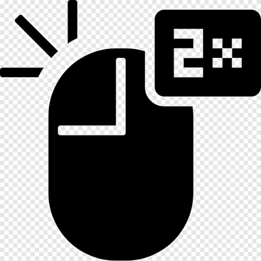
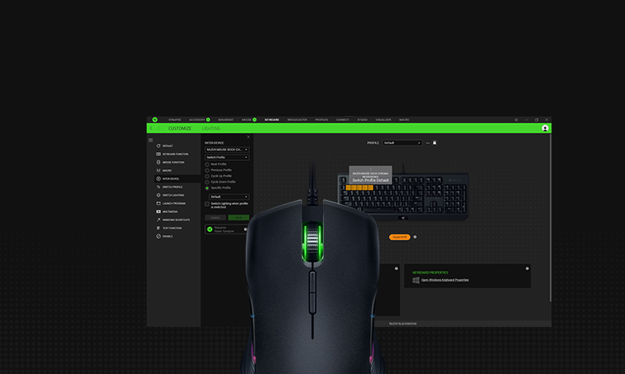
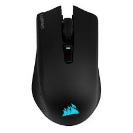
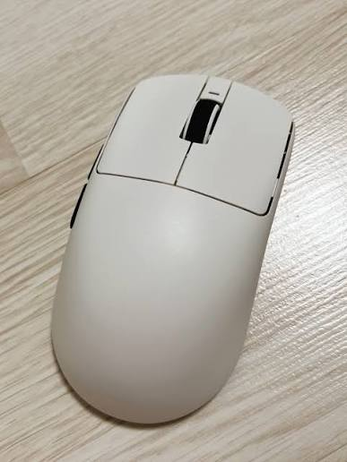

1. 로지텍 더블클릭
대표적인 로지텍 고질병. 광축 자석축 적용된 마우스는 사이드버튼들이 더블클릭나서 인터넷페이지 뒤로가기 한번 눌렀는데
시작페이지로 태초마을행 시키는등 사람을 사납게 만듬

2. 레이저 시냅스
만악의 근원. 까는순간 개붕이컴퓨터는 레이저가 지배한다꼴이 나버림. 모든 레이저 제품군을 사용할경우 안깔면 기능이 막히거나
연결하면 설치부터 할려고 달려듬. 다른 메인보드 프로그램 , 타사 키보드 제어 프로그램과 충돌하거나, 윈도우 전원옵션도 건드림

3. 커세어 펌웨어
이놈은 마우스 펌웨어 업그레이드하면 툭하면 동글이랑 페어링 끊겨버림. 해결법은 마우스를 유선으로 연결한 다음 iCUE에서
수신기 항목으로 들아가 마우스를 재연결해야하는데, 이후 재발하는경우도 다수 발생함.

4. 잠자리 QC문제 그리고 코팅
잠자리는 꽤나 호평이지만, 가장문제라고 하면 qc일듯. 휠엔코더 불량으로 3번 사본사례(개붕이 이야기) 부터 마우스 피트공급사가
일정하지 않은지 피트퀄이 진짜 가챠 수준임. 그리고 아무리 가격이 깡패라도 저 미끄러지는 쉘코팅은 정말 그립테이프 마렵게함
5. 전마우스 회사 공통 문제점 휠 튕김 혹은 휠클릭
그냥 광학휠 이외에는 답이없긴한데, 모든마우스 쓰다보면 어느순간 휠 튀어서 다뜯고 bw100 뿌리고 올분해하는게 일상임
한줄요약 : 문제는 저기 4개 회사 제품 전부 보유중 (로지텍마우스는 핫스왑개조해서 스위치갈이하고 사이드버튼은 납땜 해마다하는중)
그냥 지슈스 쓰거나 잠자리 가챠 돌리는게 최고네